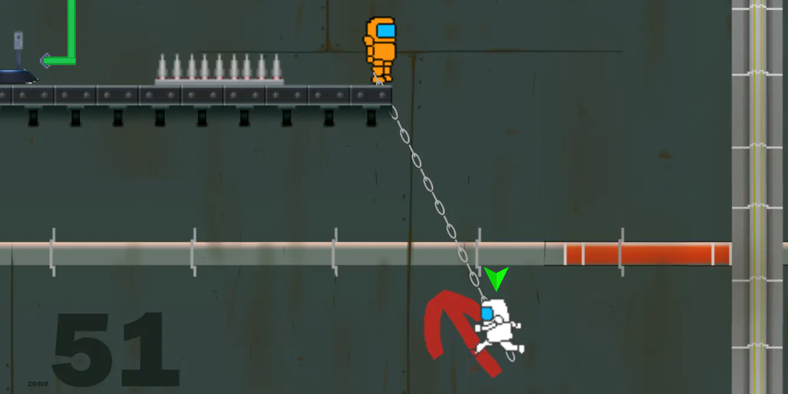
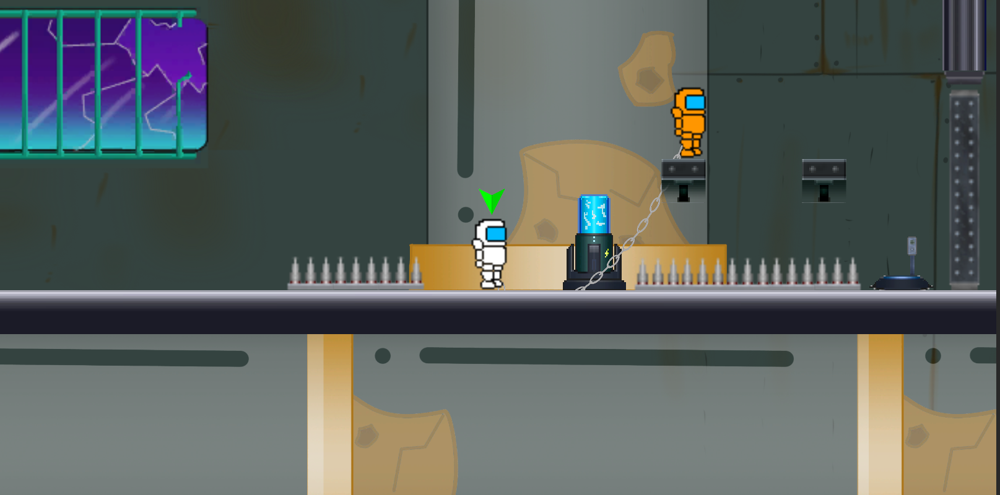

Chain Gang
- 
- 
- Role: Game and Level Designer, Programmer
- Platforms: Windows, MacOS, WebGL
- Team Size: 5
- Duration: 7 Weeks
- Responsibilities:
- Designing levels and systems to be included in the game.
- Documenting and implementing a tutorial system to introduce players to the game.
- Brainstorming puzzles for use in our levels.
- Programmed a variety of level components used in the game.
- Created various smaller pixel art assets.
-
Game Summary
Chain Gang was a group project from the first class in MSU's Game Minor. In the game you play as a pair of spacemen trying to escape a prison where they were wrongfully imprisoned. The player characters are linked together via a chain which limits their movement. They also can use the chain to conduct electricity to solve puzzles. This was the first group project of the class and my first attempt at making a fleshed out game. Chain Gang was an incredibly successful first attempt for both my team and I. It was awarded Best Game of the nine other games in the running, in addition to Most Fun and Most Playable by our class, our professors, and an external panel of judges.
-
Primary Role
My primary role at the time was as level and overall game designer. I designed our tutorial level and levels 1 - 4. My main goal for the level design was to harken back to the flash platformer games I had played as a kid and try to recreate that nostalgia all while creating fun concepts that would highlight our main mechanic, controlling two linked characters. I would start with the chain-linked character as a base and then think of interesting ways I could have them traverse the levels other than walking; having them swing across chasms or carry the other character using the chain. Once I had a "gimmick" for the level, I would use the environment to play with that gimmick in different ways. I would sketch the prototype level on paper and then play through it using my finger or some other small object to see if I felt it was fun or would fit the game.
-
Other Roles
I also was responsible for various programming and art feats in the game. These mostly consisted of small scripts and sprites used for puzzle or UI functionality. Some examples included our tutorial text system and lever and wire sprites.
Play Chain Gang Here